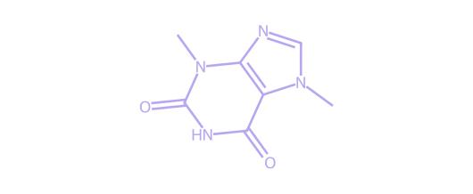

Understand structure.
Inspect reference conformers, examine functional groups and compare molecular descriptors.
Try the molecular explorerFor pharmaceutical and biotechnology R&D
Varma is building a connected workspace for molecular research. Inspect structures, compare properties and organise scientific reasoning — with evidence at the centre of every decision.
Interactive preview · No account needed · Use reference data only

Designed for inquiry
Look closely. Compare thoughtfully. Keep the reasoning visible. Every view is an invitation to explore, not a shortcut to scientific conclusions.
Compound library
Comparison bench
Set two compounds side by side. Look for a change in their structures, then check how their properties differ.


| Property |
|---|
Inside the workspace
Move from inspecting an individual compound to checking what the data can tell you.
Rotate a 3D conformer, switch representations and inspect its molecular weight and hydrogen bonding sites.
Jot down three observations. Pip, your notebook buddy, can sort them, explain their spread and show you the maths.
Explore an example research record and see how a team documents sources, assumptions and open questions.
Built around research workflows
See how the current preview relates to the work of your research team, and discuss what a full enterprise deployment would need to support.
Inspect reference conformers, examine functional groups and compare molecular descriptors.
Try the molecular explorerWork through sample observations and examine how calculations lead to a result.
Try the notebookExplore an illustrative record of sources, assumptions, computations and review roles.
Tour the evidence studioEnterprise research programme
One proposed company-level subscription, with no Varma royalty on drugs developed. Talk with us about your research objectives, integration requirements and evaluation criteria.
Commercial terms, deployment scope and availability are subject to agreement. The current public workspace is a local research preview, not a production subscription.
Per company · ₹20 lakh less than 12 monthly payments
Discuss annual accessPer company
No online checkout. Enquiries open your email app; nothing is submitted by this site.
Questions worth asking
The public preview includes six reference compounds, interactive 3D viewing, property comparisons, a sample notebook and an illustrative evidence studio. It does not require an account.
No. The public preview does not generate or validate novel candidates, predict clinical outcomes or replace experimental evidence. Any future research outputs require appropriate scientific verification.
Proposed pricing is company-level. Final functionality, availability, data handling, support and integration requirements must be agreed during enterprise discussions. The current preview is not the full commercial product.
Please use non-sensitive sample data only. This preview has no account system or connected research backend. Discuss confidential data and deployment requirements with QueroCura before enterprise use.
Email hello@querocura.com with your organisation, role and research objectives. Do not include confidential research data in your initial email.
Varma by QueroCura
Explore the interactive research preview. Reference compound data is sourced from PubChem; the notebook and evidence studio are demonstrations, not validated predictions.